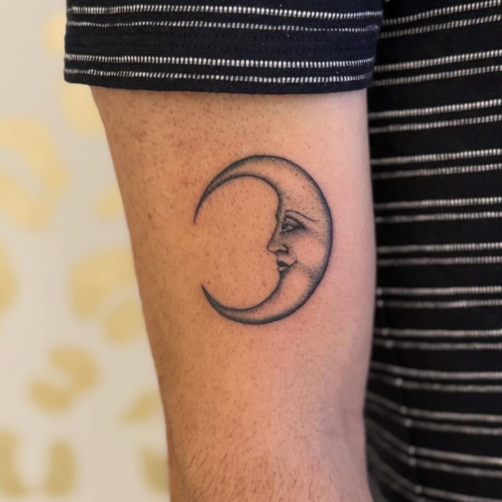
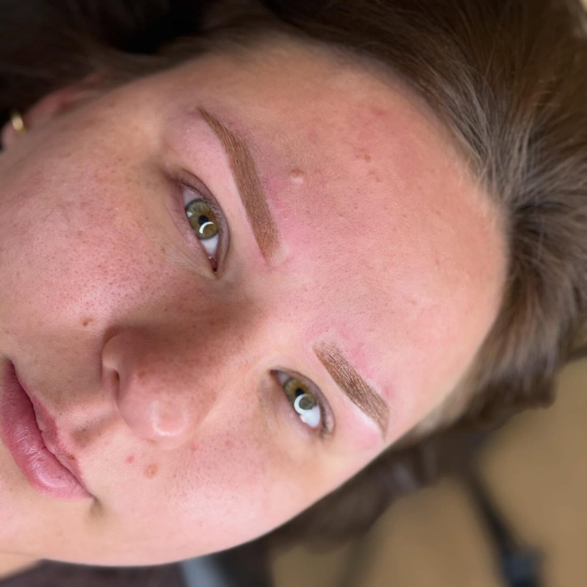
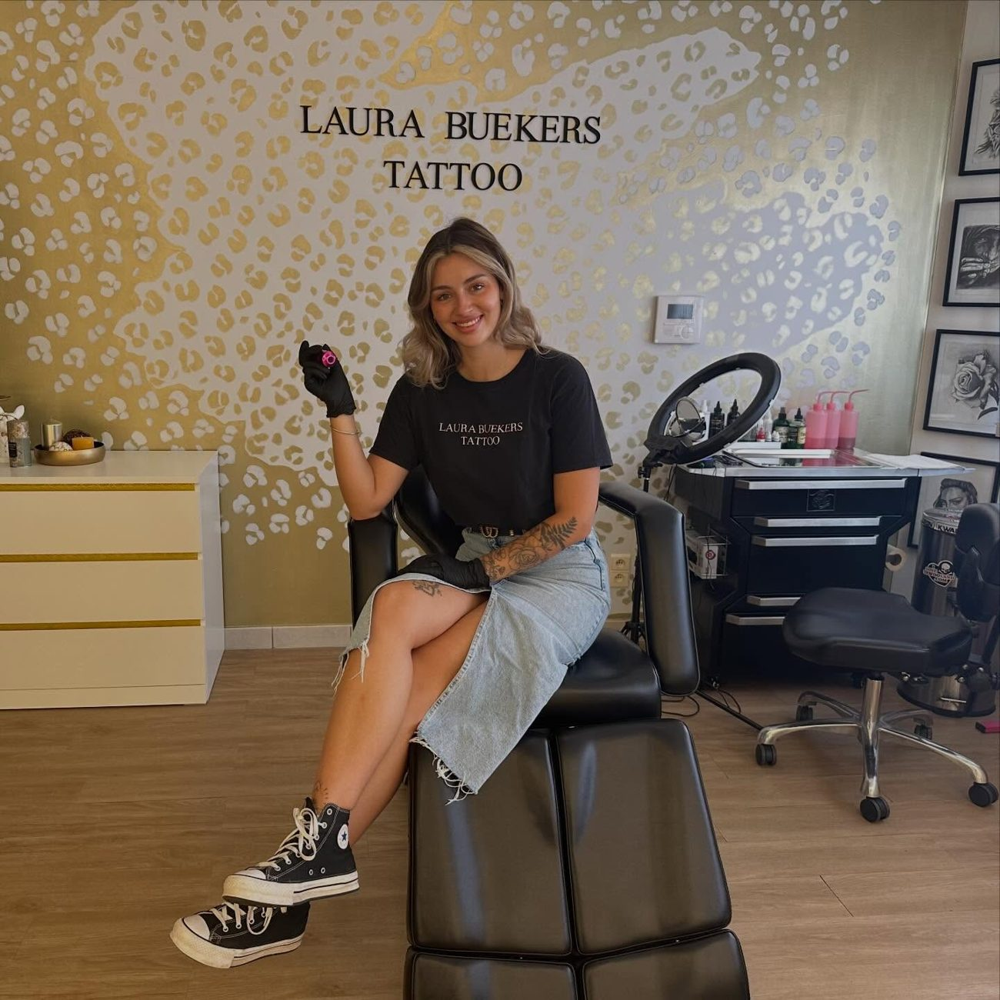

Tattoo studio in Wellen
Fijne lijnen.
Mooi gezet.
Bloemen, botanische ontwerpen en persoonlijke tattoos met oog voor detail. Ook microblading en powder brows.
Afspraak makenHoofdstuk I
Werk
Zwart-grijs, fijne lijnen, bloemen en kleine verhalen op de huid.





Een greep uit het werk.

Hoofdstuk II
Ook wenkbrauwen
Naast tattoos doet Laura microblading en powder brows. Dezelfde rust, dezelfde precisie.


Hoofdstuk III
Laura
“Vriendelijk, zorgzaam en professioneel.”Davy Daniels, Google review
Klanten schrijven dat ze proper werkt, de tijd neemt voor je wensen en je meteen op je gemak stelt. Veel mensen komen terug voor hun volgende tattoo.
Hoofdstuk IV
Wat klanten zeggen
“Voor mij heeft ze een heel bijzondere tattoo gezet: het voetafdrukje van ons zoontje. Zoiets persoonlijks vraagt om iemand die met zorg, precisie en respect werkt, en dat heeft ze meer dan bewezen.”
Laura: “Super lief Yana merci!! Altijd gezellig.”
“Al mijn tattoos zijn prachtig gezet met fijne, strakke lijnen. Mijn vingertattoos houden ook enorm goed, ondanks dat ik kapster ben en met de handen in het water zit.”
Laura: “Dankjewel Anne!”
“Ze nam de tijd om mijn ideeën te bespreken en kwam met een ontwerp dat precies aansloot bij wat ik in gedachten had. De details en schaduwen zijn prachtig uitgewerkt, en de lijnen zijn strak en precies.”
Laura: “Dankjewel Axel!”
“Deze prachtige meid heeft mijn patchwork sleeve getatoeëerd, die trouwens nog niet af is, want ik blijf lege plekjes zien om op te vullen met Laura haar prachtig tattoowerk.”
Laura: “Dankjewel Femke! Ik kijk al uit naar onze volgende afspraak!”
“Echt een top tattoo artist! Zeer tevreden van mijn tattoo. Super strakke lijnen, topdetails, alles samengevat: topwerk.”
Laura: “Dankjewel Remy!”
Reviews afkomstig van Google.
Eén lijn tegelijk.
Een afspraak maken? Mail Laura met je idee, de plaats op je lichaam en wat voorbeelden.
Bloemenstraat 22, 3830 Wellen · Route plannen
© 2026 Laura Buekers Tattoo